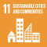

BE11: Living Wage
Employees are paid at least a living wage
1. Ambition
A Future-Fit Business pays all workers in all regions enough to meet their basic needs and secure essential services for themselves and their families.
1.1 What this goal means
A company should ensure all its employees and their families have the means to afford health coverage, to eat a nutritious diet and to be free of concerns about meeting basic needs.
A living wage affords a decent standard of living for workers and their families. Living wage estimates vary by region and guidance is offered by government agencies, academics and/or NGOs. In many regions, the living wage is higher than the legal minimum wage or poverty-line wage. Living wage calculations should focus on employee compensation with respect to standard working hours: figures should exclude overtime pay as well as productivity bonuses and allowances, unless they are guaranteed.
To be Future-Fit a company must pay all its employees at least a living wage.
1.2 Why this goal is needed
As with all Future-Fit Break-Even Goals, a company must reach this goal to ensure that it is doing nothing to undermine society’s progress toward an environmentally restorative, socially just, and economically inclusive future. To find out more about how these goals were derived based on 30+ years of systems science, see the Methodology Guide.
These statistics help to illustrate why it is critical for all companies to reach this goal:
- Being employed does not preclude living in poverty. In the UK in 2014/15, there were 2.9 million people in work classed as living in poverty. [95]
- Wages in many developed countries have remained stagnant or fallen for many years, relative to inflation. For instance, since 2000, normal weekly wages in the US have fallen 3.7% (in real terms) among workers in the lowest tenth of the earnings distribution, and 3.0% among the lowest quarter. [96]
1.3 How this goal contributes to the SDGs
The UN Sustainable Development Goals (SDGs) are a collective response to the world’s greatest systemic challenges, so they are naturally interconnected. Any given action may impact some SDGs directly, and others via knock-on effects. A Future-Fit Business can be sure that it is helping – and in no way hindering – progress towards the SDGs.
Companies may contribute to several SDGs by paying their employees a living wage, and actively encouraging their suppliers to do the same. But the most direct links with respect to this goal are:
| Link to this Break-Even Goal | |
|---|---|
| Support efforts to provide access to basic services, and to reduce people’s exposure and vulnerability to economic, social and environmental shocks. | |
| Support efforts to ensure everyone has access to safe and nutritious food. | |
| Support efforts to achieve universal health coverage, including financial risk protection, access to quality essential health-care services and affordable essential medicines and vaccines. | |
| Supports efforts to ensure access for all to clean water for drinking and sanitation. | |
| Support efforts to achieve full and productive employment and decent work for all women and men. | |
 |
Support efforts to empower and promote the economic inclusion of all, and to encourage financial flows to areas where the need is greatest. |
 |
Support efforts to ensure access for all to adequate, safe and affordable housing and basic services including transport. |
2. Action
2.1 Getting started
Background information
Poverty is a serious problem in many parts of the world, and is an issue that businesses are well positioned to address. For companies to be sure they are helping to resolve this issue, they must at a minimum ensure that they are not systematically keeping any of their workers in a state of poverty by paying them less than they need to meet the basic needs of themselves and their families.
Questions to ask
These questions should help you identify what information to gather.
For companies with multiple locations or divisions, where do decisions on wages get made?
- Is there a centralized Human Resources department with discretion over compensation rates? Or do different regions or functional departments have control over wage levels?
- If there are multiple groups or individuals with the authority to determine wages, are they coordinated in their approach?
- Does the company know the living wage in each region where it has employees? How were these figures determined? What timeframe do they relate to?
If there are regions where the company is unsure about whether it is paying a living wage, what obstacles are keeping it from making this determination?
- Are there resource constraints to calculating the living wage in the relevant regions?
- Do the company’s systems make it hard to determine what its employees are paid?
How to prioritize
These questions should help you identify and prioritize actions for improvement.
Where are the biggest opportunities to have a positive impact?
- Which of the regions the company operates in have the largest number of employees?
- Which regions have the lowest wage rates per unit of labour?
- Have any regions or operational divisions been identified as an area of concern by either internal or external groups?
Where can the company most easily make progress?
- For the areas where the company hasn’t already identified a living wage threshold, is up-to-date data available from governments or NGO sources?
- Do profit margins for specific regions or product lines allow for adjustment to wages without significantly disrupting the business model?
Could the company find ways to exceed the requirements of this goal?
- Beyond what is required to reach this goal, is the company able to do anything to ensure that people have the capacity and opportunity to lead fulfilling lives?106 Any such activity can speed up society’s progress to future-fitness. For further details see the Positive Pursuit Guide.
The next section describes the fitness criteria needed to tell whether a specific action will result in progress toward future-fitness.
2.2 Pursuing future-fitness
Introduction
The two aspects that need to be addressed are to ensure the company has identified all its employees, and to ensure that those employees are all being paid at least a living wage.
Guidance on determining which workers are in scope as ‘employees’
There are many different types of working relationships between a company and those contributing labour to its activities. It is important to distinguish who qualifies as a direct employee, and who is part of an outside organization providing services to the company. See the Implementation Guide for details on determining who is an employee.
Guidance on determining location-specific living wage thresholds
There are several approaches a company may take to determine living wage thresholds:
- Use existing, up-to-date estimates from credible third parties. Methodologies vary, and using estimates from multiple sources across different regions is acceptable, as it may be impossible to obtain all required data from a single source.107
- Partner with or commission a credible third party to undertake the calculations.
- Undertake its own calculations (see Guidance on minimum requirements in a living wage calculation).
- A combination of the above.
Family vs. Individual living wages
When looking for a living wage that has been calculated by a third party, companies may find that there are two options in some regions: an individual living wage, and a family living wage. The individual wage is based on the costs of supporting the needs of a single person in the region, whereas the family wage will also include supporting the needs of children and possibly a spouse, and is likely to be based on demographic data in the region about the average structure of families and number of workers per family.
The accepted international best practice is to use the family wage. This is in line with the guidance in the section below about calculating a living wage.
Guidance on minimum requirements in a living wage calculation
A living wage is meant to cover the needs of a typical worker and their family in the region in which they live and work. When calculating a living wage108, companies must therefore gain an understanding of both the typical family size in the region, and the number of full-time worker equivalents per couple, in order to understand the number of individuals dependent on each employee, and the cost of meeting basic needs for those individuals.
The minimum expenses to be included in addressing basic needs are:
- A low cost, nutritious diet meeting WHO recommendations for calories, macro- and micronutrients109, consistent with local food preferences.
- Potable water for consumption and sanitary / hygienic purposes.
- Clothing costs, as regionally appropriate.
- Transportation needs, as regionally appropriate.
- Costs of any other regionally relevant basic needs identified, if applicable.
- Education fees for the workers’ children.
- Decent housing, as defined by UN-HABITAT110 and applicable regional standards for decent housing.
- Healthcare needs.
- A provision for unexpected events.111
In addition to covering the above expense types, the calculation should include consideration of the following contexts:
- A clear statement of the area it is meant to apply to.
- The time period that it is calculated for.
- If the living wage is being calculated for anything other than the reporting period, an explanation must be provided as to why the figure being used is appropriate.
In accordance with the Global Living Wage Coalition methodology, a company should exclude the following:
- Overtime pay, because a living wage must be earned in standard working hours.
- Productivity bonuses and allowances, unless they are guaranteed.
Guidance on identifying wage levels of employees
When identifying employees’ wages for comparison to the living wage for each region, it is not as simple as simply identifying the stated gross salary or hourly wage of an employee.
The reality for employees is that they rely on net or take-home pay, rather than gross amounts which often undergo mandatory deductions such as taxes before reaching the employee.
Moreover, when workers receive benefits that help them meet their basic needs, such as free healthcare or meals, these can be considered as supplements toward the net pay of workers. [98]
3. Assessment
3.1 Progress indicators
The role of Future-Fit progress indicators is to reflect how far a company is on its journey toward reaching a specific goal. Progress indicators are expressed as simple percentages.
A company should always seek to assess its future-fitness across the full extent of its activities. In some circumstances this may not be possible. In such cases see the section Assessing and reporting with incomplete data in the Implementation Guide.
Assessing progress
This goal has one progress indicator. To calculate it the following steps are required:
- Assess the fitness of wage levels paid to individual employees.
- Calculate company-wide progress as the percentage of employees being paid at least a living wage.
Assessing the fitness of wages paid to employees
- Identify the living wage for each region the company operates in. In order for this criterion to be met, the wage threshold must at a minimum include the components listed in the section titled Guidance on minimum requirements in a living wage calculation.
- Identify the wages being paid to each employee in each of those regions. For considerations on how to determine this, see Guidance on identifying wage levels of employees.
- Determine whether the amounts the employees receive are equal to or greater than the living wage in their respective regions.
If no assessment has been done in a region or no appropriate living wage threshold has been identified, the default assumption must be that none of the employees in that region are paid a living wage.
Calculating company-wide progress
- Add up the number of employees being paid at least a living wage.
- Add up the total number of employees in the company.
- Calculate the percentage of employees that are paid at least a living wage.
This can be expressed mathematically as:
\[F=\frac{E_L}{E_T}\]
Where:
| \[F\] | Is the progress toward future-fitness, expressed as a percentage. |
| \[E_L\] | Is the number of employees in the company who received at least a living wage. |
| \[E_T\] | Is the total number of individuals employed by the company during the reporting period. |
For an example of how this progress indicator can be calculated, see here.
3.2 Context indicators
The role of the context indicators is to provide stakeholders with the additional information needed to interpret the full extent of a company’s progress.
Total number of employees
In addition to the percentage of employees that are being paid a living wage, a company must report on the total number of employees that worked for the company during the reporting period.
Note that for this indicator it is not appropriate to use the average number of employees (e.g. equating two employees working 20 hours per week each to one full-time employee, or three workers employed for four months each as one full time job) as such methods would risk obfuscating the impacts on one or more of the individuals concerned.
As with the progress indicator, the focus is on workers who are classified as an employee, which may not necessarily include every worker (see the Implementation Guide).
For an example of how context indicators can be reported, see here.
4. Assurance
4.1 What assurance is for and why it matters
Any company pursuing future-fitness will instil more confidence among its key stakeholders (from its CEO and CFO to external investors) if it can demonstrate the quality of its Future-Fit data, and the robustness of the controls which underpin it.
This is particularly important if a company wishes to report publicly on its progress toward future-fitness, as some companies may require independent assurance before public disclosure. By having effective, well-documented controls in place, a company can help independent assurers to quickly understand how the business functions, aiding their ability to provide assurance and/or recommend improvements.
4.2 Recommendations for this goal
The following points highlight areas for attention with regard to this specific goal. Each company and reporting period is unique, so assurance engagements always vary: in any given situation, assurers may seek to evaluate different controls and documented evidence. Users should therefore see these recommendations as an illustrative list of what may be requested, rather than an exhaustive list of what will be required.
- Document the methods used to determine the number of employees of the company during the reporting period, and how these employees are categorized into groups for the purposes of the evaluation. Assurers may use this information to verify the accuracy of the calculated indicator.112
- Document the methods used by the company to determine which sites or regions require unique living cost assessments. This can help assurers to understand the approach used and evaluate whether it fulfils the criteria.
- Document all data sources used to determine living wage thresholds. When information is available from different sources, provide reasoning behind final choices. This can help assurers to understand the relevance of the final wage value and to verify that the inputs meet the criteria.
- The company is not explicitly required to refresh its cost-of-living data on a prescribed timeframe, but if data are not current to the reporting period in question, the company should document the analysis performed to determine whether the figures are still relevant. This can help assurers to ensure that the progress indicator is based on appropriate information.
- Document the approach used by the company to determine whether there are additional region-specific costs of living that should be incorporated into the assessment, including any formal parameters used to decide if an identified item qualifies for inclusion or not. This can help assurers understand how the company ensures that no significant costs have been excluded.
For a more general explanation of how to design and document internal controls, see the section Pursuing future-fitness in a systematic way in the Implementation Guide.
5. Additional information
5.1 Example
ACME Inc. sells lemonade products. Its operations consist of two sites: a bottling plant and an office space. The company has a total of 250 employees: 50 working in the office and the other 200 at the bottling plant. A credible living wage estimate exists for the city in which the office is located, and following an assessment the company finds that 5 junior hires are paid less than the calculated living wage. It has not yet assessed wages at the factory.
The company can now calculate its progress as follows:
\[F=\frac{E_L}{E_T}=\frac{45}{250}=18\%\]
Context indicator
Total number of employees: 250.
ACME later collaborates with a credible third party to calculate living wage values for its bottling location. Based on this estimate it finds that 150 people are paid less than a living wage, while 50 are paid at or above the required level. It can now calculate its progress as:
\[F=\frac{E_L}{E_T}=\frac{45+50}{250}=38\%\]
Context indicator
Total number of employees: 250.
5.2 Useful links
The Global Living Wage Coalition
The Global Living Wage Coalition is a collaboration between a number of organizations, includingFairtrade International, the Forest Stewardship Council and others. Working within the ISEAL Alliance, these organizations have created a standardized methodology for calculating a living wage. [97]
The Living Wage Foundation
The Living Wage Foundation has calculated UK-wide and London-specific living wage estimates, and offers accreditation to companies who meet their criteria.
Fair Wage Network
The Fair Wage Network focuses on 12 dimensions which cover the spectrum of wage indicators, one of which is living wage. The organization has an extensive database of living wage values which companies can subscribe to.
WageIndicator Foundation
WageIndicator Foundation is a non-for-profit with a comprehensive database on living wage (and other wage data). National-level data is freely available, and companies can gain access to regional- and city-level data through a subscription.
Literaturverzeichnis
This is one of the eight Properties of a Future-Fit Society – for more details see the Methodology Guide.↩︎
The Global Living Wage Coalition is seen as a global leader in assessing living wage thresholds and publishes a small but expanding set of regional estimates.↩︎
The approach for the minimum recommended criteria is based on the methodology used by the Global Living Wage Coalition. [97] It should be noted that while we identify general categories of expenses and considerations for family size and structure, the full methodology is much more comprehensive, and includes significantly more detailed explanation and nuance.↩︎
See the WHO website for detail on nutrition thresholds and guidelines, including nutrition factsheets for a summary of general components of a healthy diet.↩︎
See The Right to Adequate Housing: Fact Sheet No. 21/Rev.1, published by UN HABITAT for a list of components↩︎
The living wage calculation is designed to keep employees and their families out of poverty. Without a surplus amount being included as a provision for unexpected events, a single social, economic, or natural event could send them back into poverty. Examples include political unrest interrupting work, a rise in food prices due to a poor regional harvest, or a fire or storm damaging a family home.↩︎
This information is relevant for all employee-related Break-Even Goals.↩︎